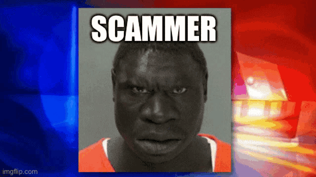
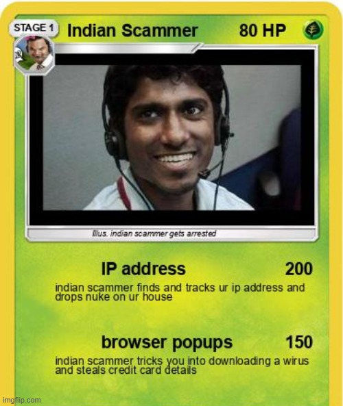

Dolandırıcılık serüvenim bir bakkalda başladı. Henüz 13 yaşındaydım ve cebimde birkaç sahte bozuk para vardı. Bunları kasiyere verip, bozukları gerçek parayla değiştirdim. Plan kusursuzdu; kasiyer bozuk paraları fark edene kadar ben çoktan uzaklaşmıştım. Bu küçük olay bana, yalanla ne kadar kolay kazanç sağlanabileceğini öğretti, ama aynı zamanda bir bağımlılık tohumu ekti.
Bir grup arkadaşla sahte bir hayır kampanyası başlatmıştık. İnternet üzerinden yardıma muhtaç çocuklar için bağış topluyormuş gibi yaptık. Sahte belgeler, fotoğraflar ve hikayeler hazırladık. İnsanların duygularını kullanarak ciddi miktarda para topladık. O dönem kendimi kazandığım parayla tatmin etmiş olsam da, bir mağdurun gönderdiği teşekkür mesajı içimde bir suçluluk duygusu uyandırdı. Ancak bunu bastırmayı başardım ve yola devam ettim.
İnternet üzerinden ucuz telefon ve laptop sattığımı iddia ettiğim bir dönem vardı. Gerçekte elimde hiçbir ürün yoktu. İnsanlar ödemeyi yapar yapmaz onları engellerdim. Bu iş bana kısa sürede büyük paralar kazandırdı. Ancak bir alıcı, yaptığı ödemeyi takip edip bana ulaştığında işler karıştı. Evime polis geldiğinde sahte kimliklerim sayesinde paçayı sıyırdım, ama bu olay beni bir süreliğine daha temkinli olmaya itti.